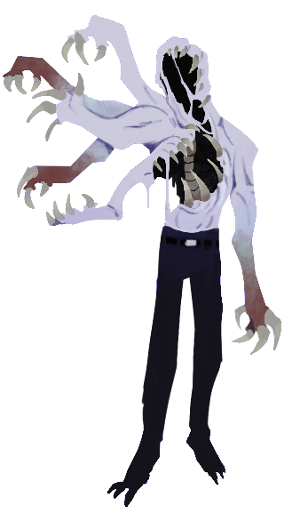

Weiss

Vaguely humanoid, smells like rotting fish; I'm not quite sure how he is able to see when accounting for the lack of a face
Status: Deceased Original Status: Enemy officer
Suffered from a secondary classification; recategorized to Ishmael.